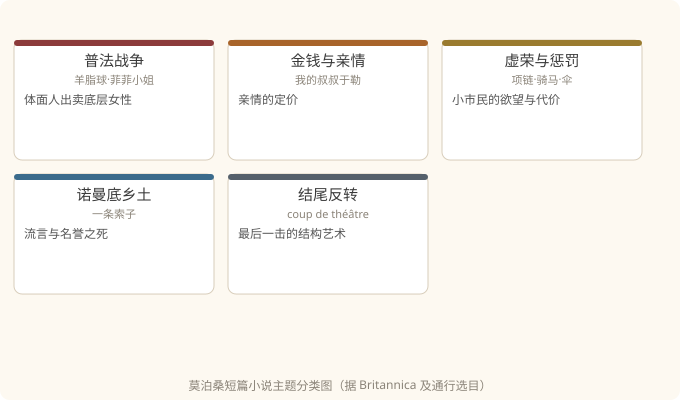

莫泊桑短篇小说选
一、基本信息
| 作者 | 莫泊桑 |
|---|---|
| 成书/出版 | 代表短篇作于1880—1890年间（Britannica：wrote roughly 300 stories between 1880 and 1890） Guy de Maupassant — Encyclopaedia Britannica（百科全书） |
| 国别/地区 | 法国 |
| 时代 | 近代 · 19世纪 |
| 体裁 | 短篇小说集（选集） |
| 语言 | 法语 |

二、创作背景
本库以'选集'立目：通行中文选本篇目大同小异——《羊脂球》《项链》《我的叔叔于勒》《一条索子》《菲菲小姐》《两个朋友》《骑马》《伞》等（选目因版本而异，本页不列固定目录，逐版本待核）。
《羊脂球》（1880，《梅塘之夜》，Britannica）：普法战争背景下，被同车'体面人'出卖的妓女——一夜成名之作；'considered his finest story'（Britannica：'Boule de suif' is considered his finest story）。
'La Parure'（《项链》）'his best known'（Britannica：'La Parure' his best known）——1884年发表（通说待核）。
三、内容脉络
《羊脂球》：一辆驿车载着体面人（商人、贵族、修女）与妓女羊脂球逃往勒阿弗尔；普鲁士军官扣车索要羊脂球陪宿，全车'体面人'先分享她的食物后合力'劝降'——返程时无人分食与她（结尾的反转）。Britannica：体面人出卖最底层的妇女。
《项链》：教育部小职员之妻玛蒂尔德为舞会借女友项链，丢失后借巨债买真项链归还，十年劳作偿债——重逢时得知那条项链是假的（结尾反转，原文意，待核）。Britannica：'his best known'。
《我的叔叔于勒》：全家盼望发财叔叔归来，船上撞见其卖牡蛎的落魄——'这是我叔叔，父亲的弟弟，我的亲叔叔'（原文意，待核）——亲情在金钱前的变形记。
《一条索子》：老农捡拾绳索被诬偷钱包，百口莫辩郁郁而终——'名誉杀人'的乡土叙事。
四、主要人物表
| 人物 | 身份 | 说明 |
|---|---|---|
| 羊脂球 | 妓女 | '他的最佳故事'（Britannica）主人公：被体面人集体出卖的底层女性 |
| 玛蒂尔德（项链） | 小职员之妻 | '虚荣—惩罚'结构的承载者；十年辛劳的对照 |
| 于勒叔叔 | 漂泊者 | 从'好人'到'流氓'再到'卖牡蛎的老水手'——以钱的镜头观看亲人 |
| 奥高斯蒂老爹（索子） | 诺曼底老农 | 被流言绞死的老实人 |
五、主题与艺术特点
- '体面人'的虚伪：Britannica——exposing hypocrisy and hidden desires（暴露伪善与隐秘欲望）——资产阶级道德的解剖台。
- 金钱的社会关系学：亲情、爱情、名誉都被金钱定价（项链、于勒）。
- 结尾的艺术：'coup de théâtre'式反转（项链的假、羊脂球的冷遇）——契诃夫与欧·亨利的先声（通说）。
- 普法战争的记忆：普鲁士占领下的乡土（《菲菲小姐》《两个朋友》）——爱国与屈辱（通说）。
六、影响与评论
- Britannica：'Generally judged the greatest French short-story writer'，1880—1890年写约300篇；'a major figure of the modern short story'。
Guy de Maupassant — Encyclopaedia Britannica（百科全书） - Britannica：《羊脂球》被视为其最佳、《项链》为其最知名——名篇双璧的世界地位。
Guy de Maupassant — Encyclopaedia Britannica（百科全书） - 文体影响：莫泊桑—契诃夫—欧·亨利的'现代短篇'三角（通说待核）；中国现代短篇（鲁迅等）对其的借鉴（通说待核）。
Guy de Maupassant — Encyclopaedia Britannica（百科全书） - 中文教育：《我的叔叔于勒》《项链》长期入选中国中学语文教材（通说待核）。
Guy de Maupassant — Encyclopaedia Britannica（百科全书）
七、阅读建议
- 短篇极简，需要'慢读'结尾两段的反转设计。
- 普法战争与1870年代法国社会背景（借款、社交）需少量注释。
- 对女性角色的态度（欲望化书写）有时代局限，宜批判性阅读。
- 赵少侯译《莫泊桑短篇小说选》（人民文学出版社）：通行本。
- 《莫泊桑短篇小说选》（上海译文/译林等版本）：篇目略异。
- 英译：Selected Short Stories（Penguin，通说待核）。
先读《羊脂球》《项链》《我的叔叔于勒》三大名篇 → 再读《一条索子》《两个朋友》《菲菲小姐》 → 对照契诃夫《万卡》体会两种短篇美学（情节反转/情绪渗透）。
八、待核实
- 选本篇目因版本而异，本页列举名篇待逐版本核对目录。
- 《项链》《我的叔叔于勒》首发报刊与日期（1884年说）待核。
- 赵少侯译本的出版年份待核。
- '300篇'统计口径（Britannica：roughly 300 stories between 1880 and 1890）与中文学界通说一致性待核。
本页主要来源
相关作品：契诃夫短篇小说选哈克贝利·费恩历险记呐喊
莫泊桑的其他收录作品：莫泊桑短篇小说选